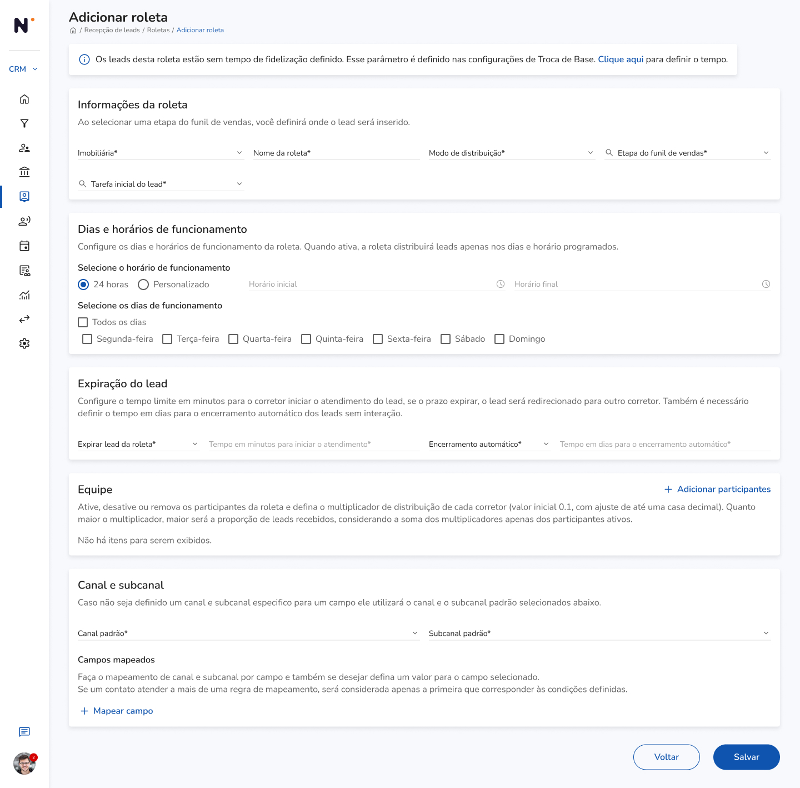
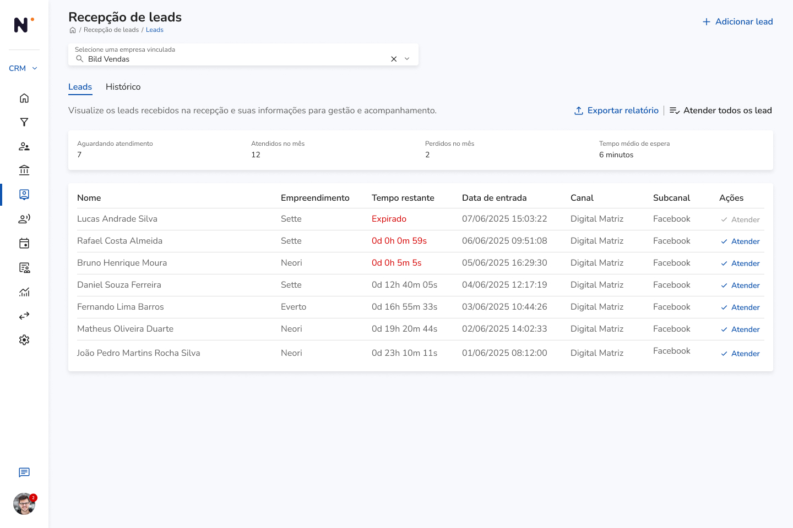

Novo fluxo
Roleta Automática: trazendo os leads para dentro do nosso sistema e acabando com processos confusos.
Internalizando a captação de leads e eliminando silos operacionais. Como um Discovery profundo com a operação de vendas centralizou o roteamento omnicanal e gerou o desuso de ferramentas terceiras.
Contexto — o problema
O time de vendas estava usando sistemas diferentes ao mesmo tempo. Cada gerente e corretor tinha que entrar em uma ferramenta separada para tratar os mesmos leads.
Isso causava confusão, falta de controle e muito retrabalho. O corretor tinha que lembrar de vários lugares para responder e continuar uma negociação.
Conduzi, junto com o PM, entrevistas presenciais com gerentes, supervisores e corretores para mapear o problema. A partir dessas evidências, desenhei a arquitetura de roteamento e as regras de negócio que viraram a Roleta Automática: um jeito de receber leads de redes sociais e lojas físicas direto no sistema e mandar cada um para um corretor disponível.
Evidências — o que o Discovery operacional revelou
Conversas detalhadas com o time de vendas mostraram os problemas que deixavam o trabalho mais lento e difícil de medir:
- Silos de dados (uso paralelo de ferramentas): unidades de diferentes cidades adotavam ferramentas terceiras de forma descentralizada, impedindo a visão unificada da diretoria sobre o custo de aquisição (CAC).
- Sobrecarga cognitiva: corretores precisavam alternar entre sistemas diferentes para receber um lead e dar andamento na negociação, atrasando o tempo de primeira resposta.
- Desconexão omnicanal: campanhas físicas e tráfego pago (Instagram/Facebook) não conversavam, dificultando a regra de distribuição justa entre os corretores da House.
Solução — arquitetura da Roleta
Desenhei um motor de regras para centralizar origens digitais e físicas, roteando o lead automaticamente para um corretor disponível.
Telas do produto
Duas frentes da interface: a gestão da roleta pelo time interno e a recepção dos leads pelo corretor.


Processo — da observação do time de vendas até a implementação natural
01 — Discovery operacional
Conduzi, junto com o PM, rodadas de entrevistas em profundidade e observação direta com gerentes de House, vendas e corretores.
02 — Auditoria de sistema terceiro
Mapeei as regras de negócio, gargalos e "gambiarras" que os usuários faziam na ferramenta concorrente.
03 — Arquitetura de roteamento
Desenhei a lógica de distribuição (Roleta Automática), conectando origens digitais e físicas ao ID do corretor.
04 — Alinhamento com engenharia
Traduzi as regras de negócio em especificações técnicas junto ao PM, garantindo escalabilidade entre filiais.
05 — Rollout e adoção
O time de produto conduziu o lançamento da V1 e o treinamento das regionais — a transição foi orgânica, resultando no abandono natural do sistema antigo pelos usuários.
06 — Evolução contínua
O time de suporte mapeou feedbacks reais da operação, que fundamentaram os épicos da V2 (atualmente em produção).
Resultados — impacto medido em economia e eficiência operacional
Trazer todo o processo para dentro do sistema acabou com o gasto da ferramenta externa e deixou a diretoria ver todo o caminho do lead, do anúncio até a venda.
- +1.000
- Leads por mês processados pela Roleta enquanto ativa, centralizando origens digitais e físicas em um único fluxo
- R$5–10 mil
- Economia média por regional, com o cancelamento das licenças da ferramenta terceira
- 100%
- Adoção orgânica: a transição para a V1 foi natural o suficiente para já tracionar o desenvolvimento da V2
Impacto na experiência da operação
Proteção de receita e economia
Ao internalizar a captação, o Grupo Bild eliminou a dependência de fornecedores externos, cortando custos de licenciamento descentralizado.
Autonomia do corretor
O lead cai diretamente no ambiente onde o corretor já realiza sua gestão de carteira diária.
Governança de dados
A diretoria passou a ter visibilidade de ponta a ponta, do clique no anúncio até a assinatura do contrato.
Conclusão
A primeira versão da Roleta mostrou que cuidar de todo o processo junto torna tudo mais eficiente: eliminamos a ferramenta externa, devolvemos controle para a direção, e a segunda versão já está em uso.
Aprendizados
- Entender como o serviço funciona mostra que o maior ganho vem de diminuir a quantidade de sistemas diferentes.
- Mapear ecossistemas de serviço revela que um possível maior ROI está em eliminar integrações desnecessárias.
- Conversar com o time de negócios ajuda a criar uma solução que serve melhor para os objetivos da empresa.